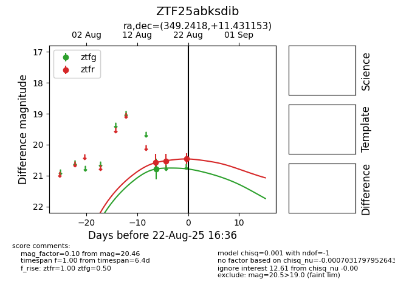

Target ZTF25abksdib at 2025-08-22 16:36, see:
FINK: fink-portal.org/ZTF25abksdib
Lasair: lasair-ztf.lsst.ac.uk/objects/ZTF25abksdib
ALeRCE: alerce.online/object/ZTF25abksdib
alt names
ZTF25abksdib (ztf,alerce)
coordinates:
equatorial (ra, dec) = (349.2418,+11.43115)
galactic (l, b) = (89.1004,-45.14505)
photometry
last ztfg=20.78, ztfr=20.46
1 ztfg, 3 ztfr detections
